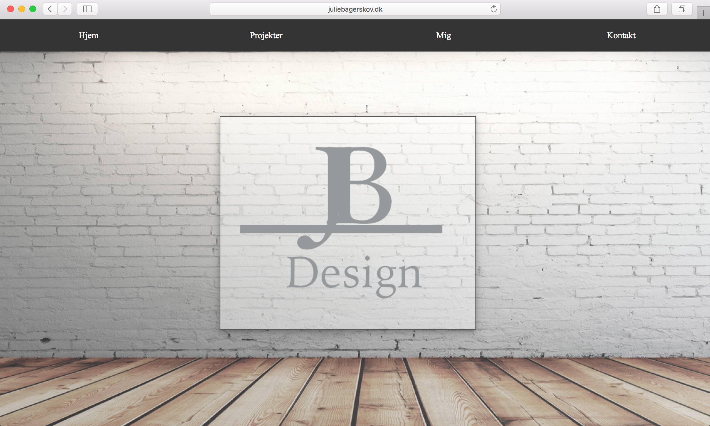
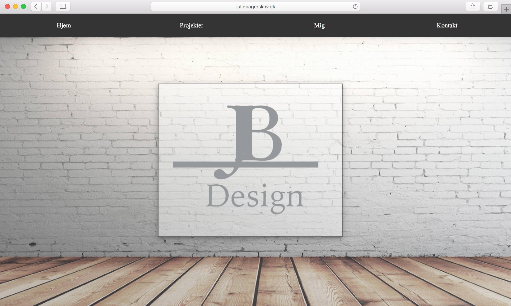

Byg din portfolio
Hvad har jeg lavet?
Denne opgave gik ud på, at man skulle implementere en fungerende online version af ens portfolio i form af et website ved hjælp af HTML 5 og CSS 3.
I denne opgave blev der lagt vægt på en passende projektstruktur og fejlfri kode. Samtidig skulle man overveje, hvem man henvendte sig til, hvordan man præsenterer sig selv bedst, hvad man formidler, hvilken visuel stil og stemning man ønsker. Alt sammen med udgangspunkt i det, der er blevet gennemgået i undervisningen.
Læringsprocessen
Dette var vores andet projekt på 1. semester. Her skulle vi for første gang prøve at kode en hjemmeside selv ved hjælp af HTML og CSS.
Vi skulle tage udgangspunkt i vores første projekt, hvor vi skulle lave en prototype af vores personlige portfolio i xd.
Vi startede helt i det basale og lærte at lave former for at få en fornemmelse af, hvad de forskellige redskaber kan.
Derefter begyndte vi at eksperimentere i at lave prototyper.
Mit remake af projektet
Mit remake af dette projekt er denne portfolio. Jeg har lavet en nyere udgave af den første med udgangspunkt i de nyere redskaber, jeg har lært siden jeg kodet den første.
Designmæssigt er der taget udgangspunkt i mit remake af projekt 1, som er en prototype.
Rent kodemæssigt er der ændret en hel del.
Jeg har lært en del HTML og CSS siden første portfolio igennem bl.a. undervisningen, codecadamy, lynda.com, youtubeklip, artikler samt W3school.com.
Siden med oversigten over projekterne har jeg ændret. Designet er ændret fra at være knapper med tal til billeder, og der er blevet tilføjet en effekt via kodningen. Effekten er at knapperne er transparant, så når man stryger musen henover, så går billedet fra at være sløret til skarp, jeg har altså tilføjet opacity.
Et andet sted hvor man især kan se en forskel fra første portfolio er inde på selve projektsiderne, hvor jeg har tilføjet jQuery nemlig slideshowet.
På de fleste sider er der også blevet indsat en tekstboks med scroll effekt. Dette er i stedet for at lave siderne længere for at få plads til brødteksten. Derved kan jeg sørge for, at siderne forbliver lige lange.
Den sidste store forandring er den nye side, jeg har tilføjet til min portfolio nemlig Værktøjer. Her kan man finde to billeder med effekten hover overlay. Dette er til at demonstrere, hvilke programmer og hvilket sprog jeg gør brug af under udviklingen af dette website.
Jeg valgte lige netop denne effekt, da jeg syntes, den gav lidt ekstra liv til siden.


 
